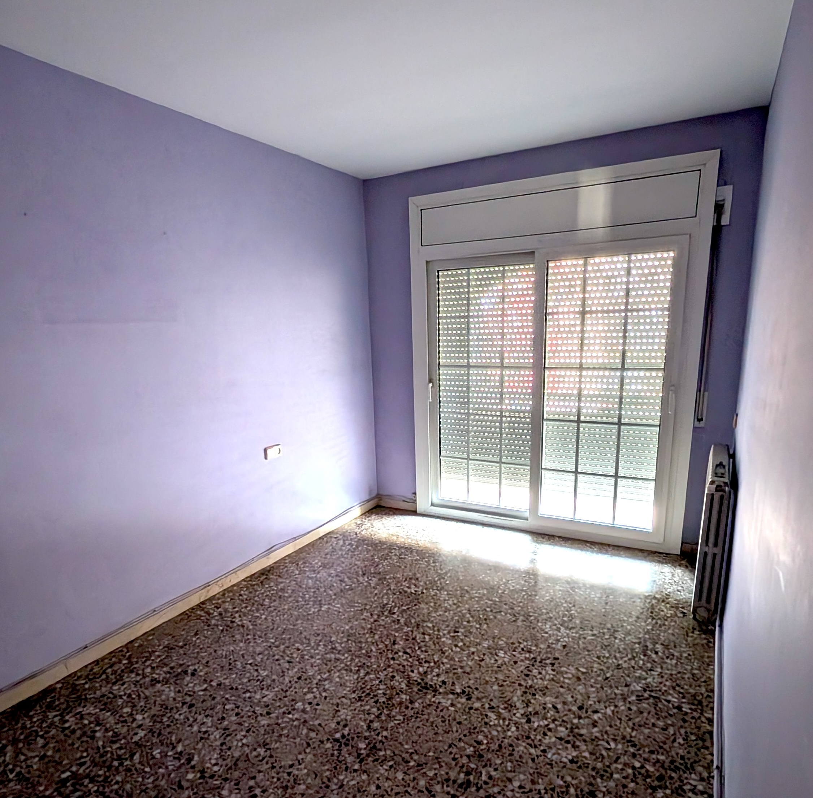
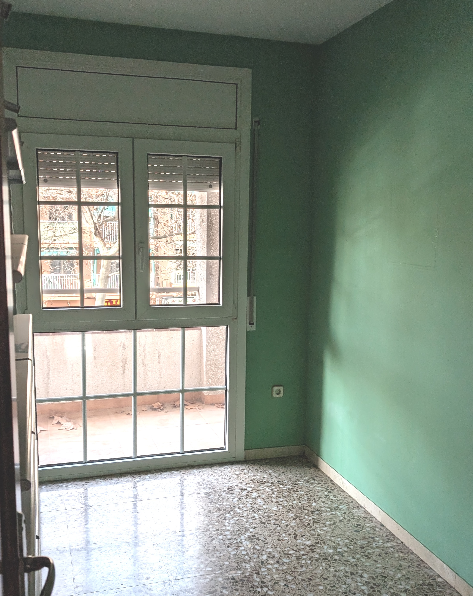
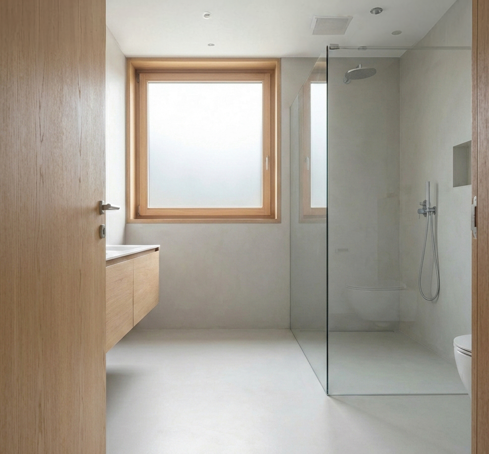
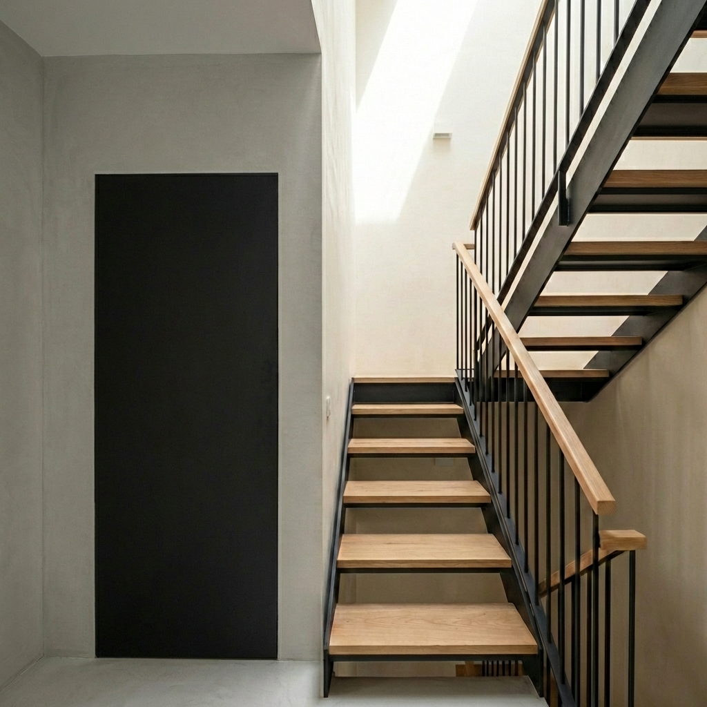
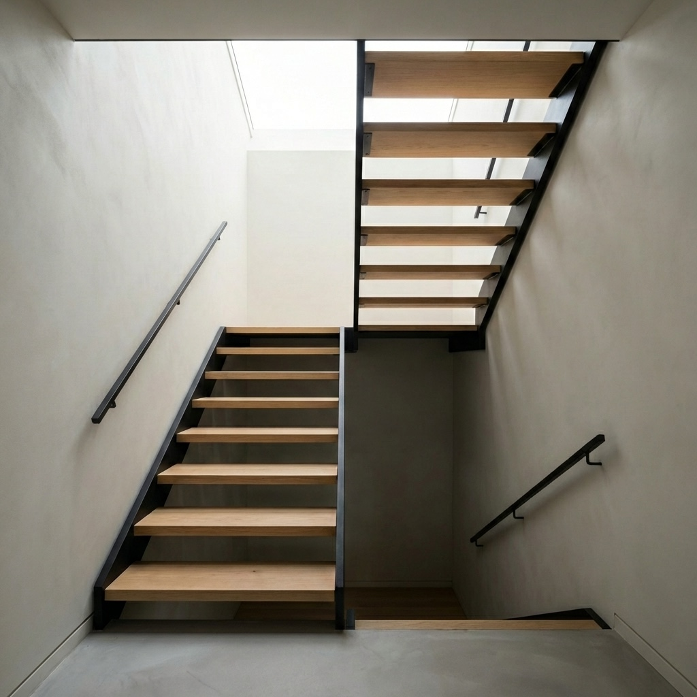
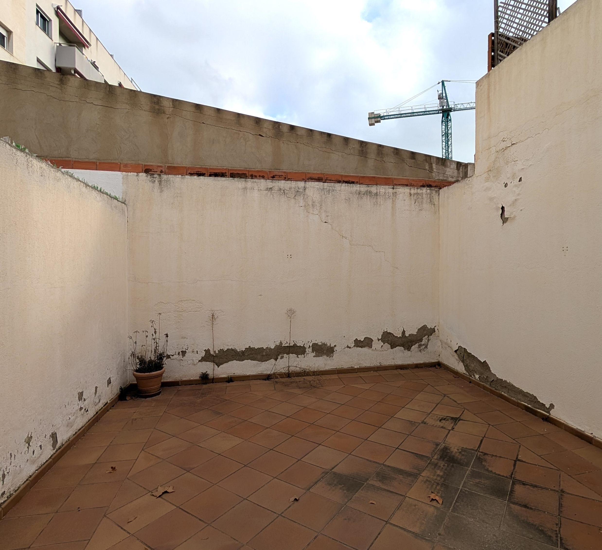
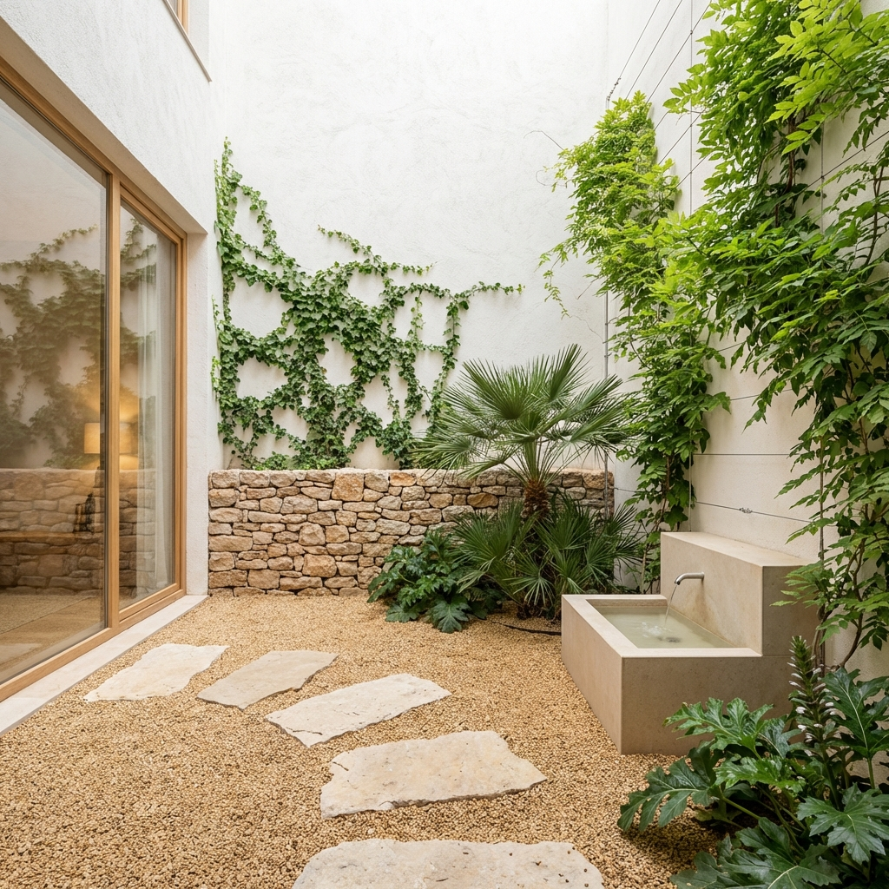

Simulacions d'interiorisme | Casa RSM
Concepte "Cozy Minimalism" | Transformació 2026

Estudi de Materialitat: Comparativa de les dues variants de rehabilitació enfront de l'estat actual. L'Opció A utilitza un zòcalo de calç color crema per a una integració totalment mediterrània, mentre que l'Opció B manté el zòcalo de pedra original com a nexe d'unió amb el veïnatge. Ambdues asseguren accessibilitat a cota zero i l'eliminació d'elements impropis.

Optimització de l'Espai: S'ha triat una taula compacta de mida només per a quatre cadires. Aquesta configuració allibera el centre de l'estança, potenciant la fluïdesa cap a les portes del fons i mantenint l'estètica neta i mediterrània del conjunt.


Optimització del repòs: S'ha reconfigurat la distribució per prioritzar la fluïdesa. El llit se situa ara a la paret esquerra, creant un espai més ampli i ordenat. La gran corredissa de fusta natural s'ubica a la paret del fons, inundant l'estança de llum matinal i connectant directament amb el balcó.


Continuïtat de materials: S'ha unificat la fusteria interior amb l'exterior. La porta d'accés ara és de fusta de roure natural clara, creant un conjunt harmònic amb el moble del lavabo i el marc de la finestra panoràmica. Es manté el terra a nivell zero per a una accessibilitat total.


Accessibilitat Integrada: S'ha situat l'ascensor enrasat a la paret principal, alineant la porta exactament amb el primer esglaó del tram que puja. Aquesta posició "al davant" elimina qualsevol nínxol o obstacle visual, creant una superfície contínua i minimalista que integra l'accessibilitat de forma tecnològica i estètica.


Eficiència Estructural: S'ha optimitzat el nucli d'escala amb un disseny ultracompacte. Els trams de pujada i baixada estan aparellats lateralment sense barana central, aprofitant al màxim el forat d'1,6 m. L'estructura de ferro negre mat i els esglaons de roure flueixen com un sol bloc banyat per la llum zenital de la nova claraboia elevada.


Art i Tecnologia: En resposta al feedback, hem evolucionat cap a un disseny molt més lleuger i artístic. S'ha substituït la llibreria massissa per una estructura de prestatges de roure integrats i retroil·luminats. La gran paret de calç ara actua com un mural digital via projecció, permetent canviar l'atmosfera segons l'estat d'ànim o l'hora del dia. La nova butaca de fusta vista i lli aporta la calidesa mediterrània sense carregar visualment l'espai.
🌈 Explorar Atmosferes Dinàmiques (Home Assistant) →

Projecte Executiu (Refugi Climàtic): Transformació del pati basat en la documentació de definició. Paviment de sauló garbellat amb pasaderes de pedra calcària. Pared sud amb zócalo de pedra seca i vegetació vertical, i una font tipus safareig per refrescar l'aire de forma natural.
Textures i Acabats
Parets amb "Estuc de calç" porós de color blanc trencat, contrastant amb fusteria de roure natural.
Paviment Tèrmic
Microciment gris seda d'alta inèrcia tèrmica, optimitzat per al funcionament de l'aerotèrmia.
Accents i Detalls
Fusteria de fusta natural clara per a una calidesa superior i il·luminació tècnica en carril encastat.